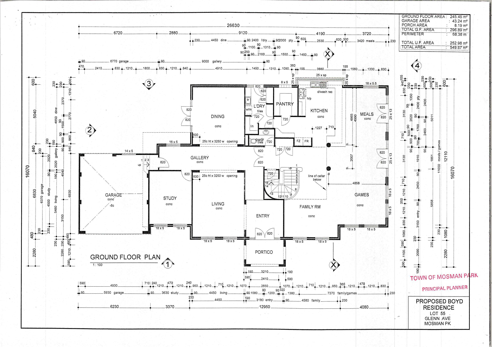

Click a room or dimension · drag to pan · scroll to
zoom

Linked zoom and pan · drag either pane · double-click PDF to fit
both
Loading 3D viewer…
EXPLORE THE BUILDING
Walk through 9 Glenn
WASD WalkMouse · LookEsc Pause
WASD · Walk Mouse · Look Click · Interact
Esc · Pause
Move mouse over grass, leaves or water · drag to rotate · scroll
to zoom · click doors
Show
SVG roof edges from the 3D model
Loading 3D viewer…